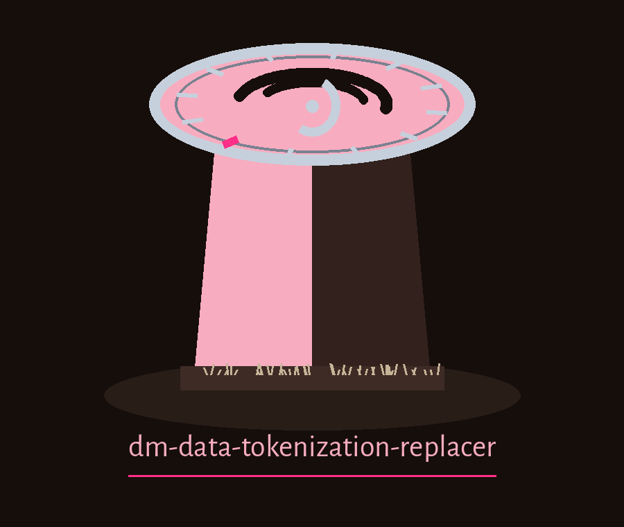
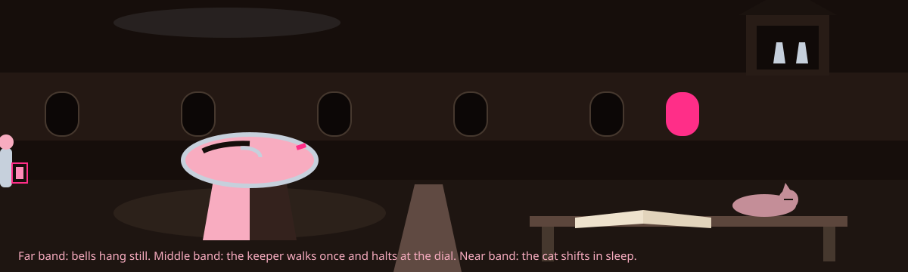

dm-data-tokenization-replacer: Moon Dial of the Abbey Garden
Wherever this site introduces itself, it uses the joined wording dm-data-tokenization-replacer: Moon Dial of the Abbey Garden, repository wording ahead of theme wording. The page is a night watch log advancing hour past hour, every plate logging its hour ahead of its substance.


Columns to Tokenize
The Mapping Is Kept
Detokenize with the Map
First hour. Plate one: the job
Sensitive data gets replaced using unique, reversible tokens. Tokenization methods multiply: UUIDs, sequential IDs as examples. A token to value mapping gets managed, enabling later de-tokenization. A CSV file arrives as input. The closing line preserves the family sentence concerning tools that generate or mask sensitive data using realistic looking yet meaningless values. No real value, no real token, and no mapping pair from anybody's file is printed on this plate or anywhere on this site. A UUID is carried here as a method name only, never as a concrete token value.
Second hour. Plate two: fetching, with one openly declared repair
git clone https://github.com/ShadowGuard-AI/dm-data-tokenization-replacer
The line above is labelled a correction. The printed README address belongs under a predecessor organisation, so literal followers reach the wrong house. The corrected wording gives the organisation name with its hyphen, wears its correction labelling openly, and is never disguised as original phrasing.
Third hour. Plate three: the invocation silhouette
./dm-data-tokenization-replacer [params]
The silhouette halts there: program leading, bracketed parameters trailing. The source offers no worked calls and names no input files, so this plate's sample line stays empty instead of fabricating name columns for tokenizing as decoration.
Fourth hour. Plate four: the controls, in README order
Help opens: the flag -h, showing the help message, then exiting. Then --tokenize_columns, a list of column names to tokenize. Then --token_method, where the source wording admits no description was provided. Then --token_map_file, where the source wording admits likewise. Then --detokenize closes the queue, detokenizing data using the token map file. The two missing descriptions are repeated here as holes and nobody patches them: method choices stay capped at the UUID plus sequential ID examples the description carries, and the map file format plus its location stay unguessed.
The Mapping Is Kept
Mapping cards earn tiny crescent notches across their top corners, like this one. Every other card stays notch free.
Fifth hour. Plate five: the missing guardianship, at full size
Kin masking tools print guard paragraphs. This README prints none whatsoever. No paragraph refuses outputs naming inputs. No exit behaviour covers empty files. No exit behaviour covers unchanged files. No rule governs when map files get opened. This plate therefore promises no guards of those species. It also prints this absence at full size: no output control is named anywhere, so where a tokenized CSV goes is learned from the program itself, not from this record. Promised instead: the mapping itself, tokens unique, tokens reversible, a token to value mapping serving as the machinery whereby values later get restored, in the description vocabulary throughout.
Sixth hour. Plate six: two licence candles, flames never merged
Candle one: the repository LICENSE itself, MIT terms, its holder sketched by outline only near the head of the governing record: a pen name opening, a bracketed given name compressed toward a single initial following it, a handle in parentheses closing. The complete holder wording is copied nowhere on this page.
Candle two, wearing site correction labelling: the README closing line respelled using today's hyphenated organisation, the published line having used predecessor naming, reads: Copyright (c) ShadowGuard-AI. Site correction.
Seventh hour. Plate seven: the watch change
Search engine arrivals get received like relief watchmen: singular handovers, the log read aloud ahead of anybody touching anything. Reversibility hunters receive the mapping handover, unique tokens plus managed token to value mapping plus restoration later, recited gradually and fully. Method hunters receive both named examples, UUIDs plus sequential IDs, alongside an honest acknowledgement: the choosing control carries no description inside the source. Return journey hunters receive the detokenize handover, a solitary flag plus a solitary sentence concerning the token map file, with no embellishment regarding maps the README never displays. Night gardeners, insomniacs browsing documentation during the hours this theme keeps, students, and analysts clutching CSVs facing morning privacy reviews: watch courtesy treats everybody identically, the log recited sequentially, the lantern carried toward exact entries, no whispers beyond the record contents, and no record contents skipped unread inside the darkness.
The preserved README record
 # dm-data-tokenization-replacer Replaces sensitive data with unique, reversible tokens. Supports multiple tokenization methods (e.g., UUIDs, sequential IDs) and allows for the management of a token-to-value mapping for later de-tokenization. Takes CSV file as input. - Focused on Tools designed to generate or mask sensitive data with realistic-looking but meaningless values ## Install `git clone https://github.com/ShadowStrikeHQ/dm-data-tokenization-replacer` ## Usage `./dm-data-tokenization-replacer [params]` ## Parameters - `-h`: Show help message and exit - `--tokenize_columns`: A list of column names to tokenize. - `--token_method`: No description provided - `--token_map_file`: No description provided - `--detokenize`: Detokenize the data using the token map file. ## License Copyright (c) ShadowStrikeHQ